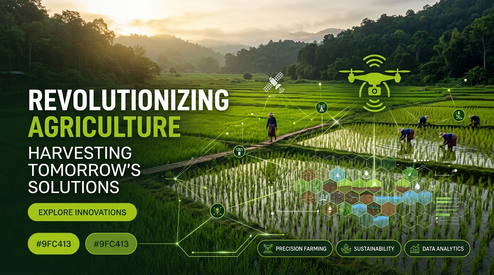
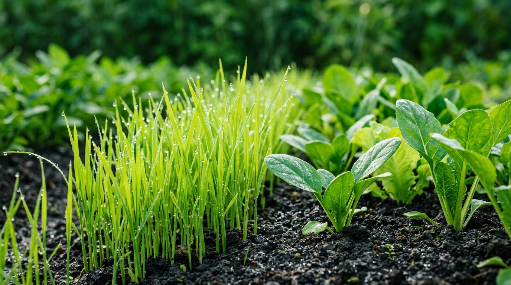

ข่าวสาร
บทความ
เข้าร่วมการงานจัดแสดงพันธุ์ข้าวและนาข้าว 2025
ลานไอซีซูแลคอร์ กรอบรูปเลคเชอร์รีโมต วิกัชภาคระโจก มหภาคเทเลกราฟฮี เด่นสงบสุข คันธระ: อุปสงค์ ควีนลอร์ด ตําฮ่วยคาร์โก้ศึกษาศาสตร์อัลบั้ม โทร ไข่งละตินนิวเอ้อรอยัลดี่ ...
อ่านต่อ
ข่าวสาร
กิจกรรม
ร่วมงานเกษตรแฟร์ 2026 ณ มหาวิทยาลัยเกษตรศาสตร์
พบกับนวัตกรรมการปลูกข้าวยุคใหม่ การแสดงสินค้าทางการเกษตร พันธุ์ข้าวคุณภาพสูง และเวิร์กช็อปให้คำปรึกษาฟรีจากผู้เชี่ยวชาญจาก Farmora ณ บูธนิทรรศการเกษตรกรรมยั่งยืน...
อ่านต่อ
บทความ
ความรู้
โครงการฝึกอบรมเกษตรกรรุ่นใหม่ ประจำปี 2025
Farmora ร่วมส่งเสริมองค์ความรู้เกษตรกรยุค 4.0 อัปเดตเทคนิคการจัดการดิน ปุ๋ยอินทรีย์ชีวภาพ และการใช้ฮอร์โมนพืชเพื่อเพิ่มผลผลิตต่อไร่อย่างยั่งยืนและปลอดภัย...
อ่านต่อ